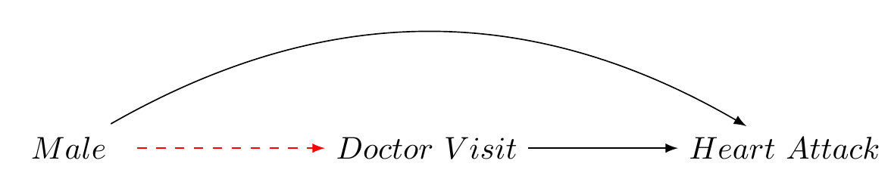
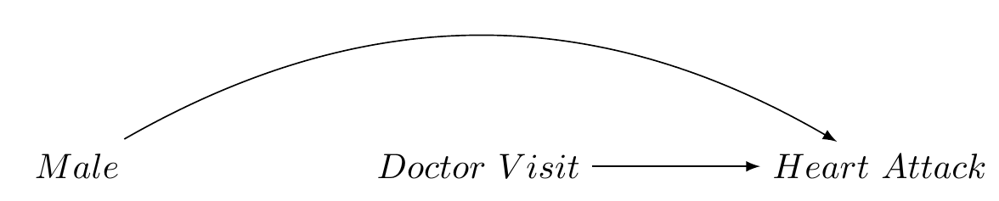

What is Inverse Probability of Treatment Weighting (IPTW)?
Inverse Probability of Treatment Weighting (IPTW) is a method for estimating causal effects from observational data, using propensity scores to balance covariates between treated and untreated groups. This creates a pseudo-population where the probability of treatment assignment is independent of the observed covariates (gender, in our example below). Similar to G-computation, the method helps to estimat causal effects more accurately. Here, we consider IPTW in a setting where we wish to estimate the Average Treatment Effect (ATE).
The material seems well written for an advanced biostatistics audience, but I’ll make a few adjustments for improved clarity and precision. Here’s the revised material:
Inverse Probability of Treatment Weighting (IPTW)
Inverse Probability of Treatment Weighting (IPTW) is a method employed for estimating causal effects from observational data. This is achieved by using propensity scores to balance covariates between treated and untreated groups, thereby creating a pseudo-population where the treatment assignment is independent of the observed covariates. This approach, akin to G-computation, aids in enhancing the accuracy of causal effect estimation. In this context, we consider IPTW to estimate the Average Treatment Effect (ATE).
Bias in Observational Data: An Example
Consider an observational dataset with measures for gender (L), frequency of doctor’s visits (our treatment A), and heart attack incidence (our outcome Y).
Let’s assume:
- The 10-year incidence risk of heart attacks is \(p\) for females.
- For males, the risk is \(2p\) (twice as high).
- Doctor visits reduce the risk of heart attacks by \(0.2p\).
- Males are half as likely to visit doctors as females.
In our sample of 1,000 individuals:
- 500 are males (50% of 1,000)
- 500 are females (50% of 1,000)
The overall risk \(R_{\text{sample}}\) in the sample is computed as the weighted sum of the risks in males and females:
\(R_{\text{sample}} = 0.5 \times 2p + 0.5 \times p = 1.5p\)
Given that the gender proportions are balanced in our sample, \(R_{\text{sample}}\) should also represent the true risk \(R_{\text{population}}\) in the population:
\(R_{\text{population}} = R_{\text{sample}} = 1.5p\)
However, if we also suppose:
- Doctor’s visits (the treatment) reduce the risk of a heart attack by \(0.25p\).
- Males are twice less likely to visit doctors than females.
Under these conditions, the causal effect of treatment on the outcome will be biased.
Let’s assume the baseline risk for females is \(0.2\) and for males is \(0.4\) (since they are twice as likely to have heart attacks). The treatment effect for individuals who visit a doctor (both males and females) reduces their risk by \(0.25p\).
Hence, we have:
- Risk of heart attack for females who do not visit the doctor: \(0.2\)
- Risk of heart attack for females who visit the doctor: \(0.2 - 0.25 \times 0.2 = 0.15\)
- Risk of heart attack for males who do not visit the doctor: \(0.4\)
- Risk of heart attack for males who visit the doctor: \(0.4 - 0.25 \times 0.4 = 0.3\)
The bias in the sample is represented in the causal graph Figure 1.
Our sample is biased.Now, let’s represent the treatment group (doctor’s visits) and control group (no doctor’s visits) as A = 1 and A = 0, respectively and simulate our data:
| Actual_Treatment | A_1 | A_0 |
|---|---|---|
| Male | .25 | .75 |
| Female | .75 | .25 |
What is IPTW?
Inverse Probability of Treatment Weighting (IPTW) is a method for estimating causal effects using propensity scores to restore balance in the distribution of confounders within treatment groups. A propensity score as the estimated probabilities of receiving treatment given the observed covariates. By balancing the confounding baseline covariates between the treated and untreated groups, we effectively create a pseudo-population where treatment assignment is independent of the observed covariates.

Code
library(tidyverse)
library(knitr)
library(kableExtra)
# create data frame
my_data <- tibble(
Weighted_Treatment = c(
"Male",
"Female"),
A_1 = c(".5", ".5"),
A_0 = c(".5", ".5"),
)
# create table
my_data %>%
kbl(format = "html") |>
kable_styling("hover")| Weighted_Treatment | A_1 | A_0 |
|---|---|---|
| Male | .5 | .5 |
| Female | .5 | .5 |
Mathematically, the ATE using IPTW can be represented as follows:
[ _{IPTW} = - ]
Where:
- \(\hat{ATE}_{IPTW}\) is the estimated Average Treatment Effect using IPTW.
- \(Y_{i}\) is the outcome for individual\(i\).
- \(A_{i}\) is the treatment status for individual\(i\) (1 if treated, 0 if untreated).
- ( (L_{i}) ) is the estimated propensity score for individual \(i\), which is the predicted probability of treatment given the observed characteristics ( A_{i} ).
(Please note that this is the population ATE. If you want the sample ATE, you can replace the sums in the numerator and denominator with means.)
- Create Weighted Sample: In the weighted sample, each individual is given a weight according to their IPTW to create a pseudopopulation
After we have the IPTWs for each individual, we can use these weights to create a weighted sample, or pseudopopulation. This pseudopopulation is used to estimate the Average Treatment Effect (ATE).
The weights are used to assign a weight to each individual in the sample. These weights are proportional to the inverse of the probability that the individual received the treatment they did, given their covariates.
The weight for each individual can be viewed as the number of times they appear in the pseudopopulation. For example, if an individual has a weight of 1.25, it is as if they appear 1.25 times in the pseudopopulation.
In a real analysis, we would use this pseudopopulation to estimate the Average Treatment Effect (ATE). We would fit a model (for example, a logistic regression model if the outcome is binary, or a linear regression model if the outcome is continuous) to this weighted sample, and the estimated effect of the treatment would be our estimate of the ATE.
Here we will simulate the \(ATE_{IPTW}\) by simulation:
# Load necessary libraries
library(tidyverse)
# Note
#1. **Treatment assignment:** Treatment assignment must be randomized within each gender group.
#2. **Outcome calculation:** In the calculation of the outcome,the treatment effect should only apply to those who received the treatment.
#3. **IPTW weight calculation:** The weights are the inverse probability of treatment weights (IPTW), which are used to create a pseudo-population in which treatment assignment is independent of the observed covariates.
#4. **ATE calculation:** The ATE should be calculated as the difference in the mean outcomes between the treated and untreated groups in the IPTW-adjusted population.
# Function to generate data and calculate ATE
simulate_ATE <- function() {
# Define groups
N <- 1000
# Define the risks
risk_F <- 0.4
risk_M <- 0.6
risk_reduction <- 0.25
# Create a data frame
data <- tibble(
gender = rep(c("Female", "Male"), each = N/2),
treatment = c(rbinom(N/2, 1, 0.6), rbinom(N/2, 1, 0.2)) # Treatment assignment based on propensity scores
)
# Define outcome based on gender, treatment, and associated risk
data <- data %>%
mutate(outcome = ifelse(gender == "Female",
ifelse(treatment == 1, rbinom(N/2, 1, risk_F - risk_reduction), rbinom(N/2, 1, risk_F)),
ifelse(treatment == 1, rbinom(N/2, 1, risk_M - risk_reduction), rbinom(N/2, 1, risk_M))))
# Generate propensity scores using logistic regression
model_ps <- glm(treatment ~ gender, data = data, family = "binomial")
data$ps <- predict(model_ps, type = "response")
# Calculate IPTW weights
data <- data %>% mutate(weight = ifelse(treatment == 1, 1/ps, 1/(1-ps)))
# Calculate ATE using IPTW
treated_outcome <- with(data, sum(weight[outcome == 1 & treatment == 1]) / sum(weight[treatment == 1]))
control_outcome <- with(data, sum(weight[outcome == 1 & treatment == 0]) / sum(weight[treatment == 0]))
ATE_iptw <- treated_outcome - control_outcome
ATE_iptw
}
# Set seed for reproducibility
set.seed(12345)
# Run simulation 500 times
simulations <- replicate(500, simulate_ATE())
# Calculate mean and confidence intervals
mean_ATE <- mean(simulations)
CI_ATE <- quantile(simulations, c(0.025, 0.975)) # 95% CI
# Print results
print(paste("95% Confidence Interval for ATE: ", CI_ATE[1], " - ", CI_ATE[2]))[1] "95% Confidence Interval for ATE: -0.32037215570015 - -0.18016591005666"This code first defines the gender and treatment status of each individual in the sample. Then it calculates the propensity scores, which are the probabilities of receiving receiving the treatment given the individual’s gender. After that, the code calculates the Inverse Probability of Treatment Weights (IPTWs) for each individual. The IPTWs are then used to calculate the Average Treatment Effect (ATE) using the formula provided above. This simulation is repeated 500 times to estimate the confidence interval for the ATE.
The result of the simulation is a 95% confidence interval for the Average Treatment Effect (ATE). This provides an estimate of the range within which the true ATE is likely to fall, with 95% confidence.
To further clarify the concepts, here is a step-by-step overview of the process:
Define the population: The population consists of 1,000 individuals, with an equal distribution of males and females.
Assign treatment: Treatment (doctor’s visits) is assigned based on a Bernoulli distribution, with males being twice as less likely to visit doctors than females.
Calculate outcomes: The outcome (risk of heart attack) is calculated based on gender and treatment status, with doctor’s visits reducing the risk of heart attacks by 0.25p.
Estimate propensity scores: Propensity scores, the probability of receiving treatment given the observed covariates, are estimated using a logistic regression model.
Calculate IPTWs: IPTWs are calculated as the inverse of the propensity scores for the treated, and the inverse of one minus the propensity scores for the untreated.
Create weighted sample: The IPTWs are used to create a weighted sample, or pseudopopulation, where each individual’s weight is proportional to the inverse of the probability that they received the treatment they did, given their covariates.
Estimate ATE: The ATE is estimated as the difference in the mean outcomes between the treated and untreated groups in the pseudopopulation. This is done by fitting a model to the weighted sample and estimating the effect of the treatment.
The last part of the R code block performs a Monte Carlo simulation to repeat this process 500 times. The result is a distribution of ATE estimates, from which we can derive a 95% confidence interval. The confidence interval provides a range of values within which we expect the true ATE to fall, with 95% confidence.
In summary, the IPTW method allows us to estimate causal effects from observational data by addressing the bias due to confounding covariates. In our example, the method helps us estimate the effect of doctor’s visits on heart attack risk, while accounting for gender bias. It’s crucial to note, however, that IPTW only addresses bias due to observed confounders. Any unobserved confounders could still introduce bias into our estimate of the treatment effect.
Finally, it’s important to check the robustness of the IPTW method under different scenarios. Sensitivity analyses can be performed to assess how changes in the assumptions or model specifications could affect the estimated treatment effect. Additionally, other methods like matching or standard regression adjustment could be used in conjunction with IPTW to ensure the robustness of the findings.
Please note that this is a simplified example and in real-world applications, the propensity scores would be estimated using a statistical model such as logistic regression, which could include other covariates. The randomness in the outcome generation and the finite sample size can also result in some variability in the estimated ATE.
This R code provides an example of how to calculate the ATE using IPTW. The ATE using IPTW is the difference between these two quantities.
However, in a real-world scenario, these would be the observed outcomes (in this case, the occurrence of heart attack) for the respective groups. These outcomes would then be used to estimate the ATE using IPTW.
Summary
It’s important to note that IPTW doesn’t adjust for unobserved confounders, and the validity of the results depends on the assumption of no unmeasured confounders, the correct specification of the model used to estimate the propensity scores, and the correct specification of the model used to estimate the ATE.
This example demonstrates the application of IPTW in a relatively simple scenario. In real-world research, we often have to deal with multiple covariates and complex interactions between them, which can further complicate the estimation of propensity scores and IPTWs. Nevertheless, IPTW is a powerful tool for causal inference in observational studies, and it plays a crucial role in many fields of research, including epidemiology, social sciences, and economics.
Sure, let’s refine this text in a step-by-step manner. We’ll provide a precise walkthrough of the steps required for implementing the Inverse Probability of Treatment Weighting (IPTW) and offer a clearer mathematical interpretation of the unweighted ATE using IPTW.
Step 1: Understanding IPTW
Inverse Probability of Treatment Weighting (IPTW) is a method used to estimate causal effects from observational data. This is achieved by balancing the distribution of confounding variables across treatment and control groups using propensity scores.
Step 2: Propensity Scores
Propensity scores are the predicted probabilities of receiving treatment given the observed covariates. By balancing these confounding covariates, we essentially construct a pseudo-population where the probability of treatment assignment is independent of the observed covariates. This brings us closer to a randomized experiment scenario, enabling us to estimate the causal effect of treatment.
Step 3: Average Treatment Effect (ATE)
To apply IPTW, we aim to estimate the Average Treatment Effect (ATE). In its unweighted form, the ATE using IPTW can be represented as:
[ _{IPTW} = - ]
Here:
- \(\hat{ATE}_{IPTW}\) represents the estimated Average Treatment Effect using IPTW.
- \(Y_{i}\) represents the outcome for individual \(i\).
- \(A_{i}\) is the treatment status for individual \(i\) (1 if treated, 0 if untreated).
- \(\hat{e}(L_{i})\) denotes the estimated propensity score for individual \(i\), which is the predicted probability of treatment given the observed characteristics \(L_{i}\).
The above formula calculates the difference in outcomes between the treated and untreated individuals, where each individual’s contribution is weighted by the inverse of their probability of receiving the treatment they did, given their covariates. This creates an unweighted or crude estimate of the ATE, as it doesn’t account for potential bias due to confounding covariates.
Step 4: Creating a Weighted Sample
After calculating the IPTWs for each individual, we can use these weights to construct a weighted sample, or pseudopopulation. This pseudopopulation is used to estimate the ATE.
The weights are used to assign a value to each individual in the sample. These weights are proportional to the inverse of the probability that the individual received the treatment they did, given their covariates.
In the context of the pseudopopulation, the weight for each individual can be thought of as the number of times they appear in the pseudopopulation. For instance, if an individual has a weight of 1.25, it is as if they appear 1.25 times in the pseudopopulation.
Step 5: Estimating the ATE
In practical analysis, we use this pseudopopulation to estimate the ATE. We fit a model (for example, a logistic regression model if the outcome is binary, or a linear regression model if the outcome is continuous) to this weighted sample, and the estimated effect of the Sure, let’s continue from where we left off:
Step 5: Estimating the ATE (Continued)
treatment serves as our estimate of the ATE. When done correctly, this approach can help us estimate the causal effect of the treatment, while accounting for the confounding variables that could otherwise bias our results.
Step 6: Simulation
The next step involves simulating the \(ATE_{IPTW}\) to estimate the confidence interval for the ATE. This simulation is usually performed multiple times (say, 500 times) to generate a distribution of ATE estimates, which is used to calculate a confidence interval for the true ATE. This confidence interval provides a range within which we would expect the true ATE to fall with a certain level of confidence, typically 95%.
Step 7: Interpretation
After the simulation, we interpret the results. The IPTW approach allows us to estimate the causal effects from observational data by addressing the bias due to confounding covariates. It’s important to note, however, that the IPTW approach only adjusts for observed confounders; unobserved confounders could still introduce bias into our estimates.
Step 8: Validation
Finally, it’s crucial to validate the findings. Sensitivity analyses can be conducted to assess how changes in the assumptions or model specifications could affect the estimated treatment effect. Also, other methods like matching or standard regression adjustment could be used alongside IPTW to ensure the robustness of the findings.
Remember, this is a simplified example. In real-world applications, propensity scores would typically be estimated using more complex statistical models, potentially including a variety of other covariates. Also, the randomness in the outcome generation and finite sample sizes can introduce variability in the estimated ATE.
Summary
IPTW is a powerful tool for estimating causal effects from observational data, particularly when random assignment to treatment and control groups is not feasible. However, it’s important to be aware of its limitations. The method doesn’t adjust for unobserved confounders, and the validity of the results depends on the assumption of no unmeasured confounders, correct specification of the propensity score model, and correct specification of the model used to estimate the ATE. Despite these challenges, when applied correctly, IPTW can provide valuable insights in fields as diverse as epidemiology, economics, and social sciences.
Looking ahead
IPTW with Time-varying Treatments
In longitudinal studies, where treatments can vary over time, we can extend the IPTW method to handle time-varying treatments. For this, we use a concept called the “marginal structural model”. In this model, we estimate the effect of the treatment over time, accounting for the fact that the treatment and covariates can change over time.
The weights in this case, often referred to as “stabilized weights”, are calculated slightly differently than in the simple IPTW method. They are designed to reduce the variability of the weights and improve the efficiency of the estimator.
Checking the Balance of Covariates
After calculating the IPTWs and creating the pseudopopulation, it’s important to check the balance of covariates between the treated and untreated groups. This can be done by comparing the distribution of covariates in the treated and untreated groups before and after weighting. If the IPTW method is successful, the distributions of the covariates should be similar in the two groups after weighting.
Variance Estimation
Standard errors and confidence intervals for the ATE estimator using IPTW can be obtained using bootstrapping, a resampling method that provides an empirical estimation of the sampling distribution of a statistic. Alternatively, robust variance estimators can be used.
Conclusion
While IPTW is a powerful tool for causal inference, it is not without its challenges. It requires correct specification of the treatment model (to estimate propensity scores) and careful interpretation of the results. Further, it only addresses confounding by observed covariates, and unobserved confounding remains a potential source of bias. Despite these challenges, IPTW remains a valuable method in observational studies where randomized controlled trials are not feasible.
In practice, IPTW is often used in combination with other methods for causal inference, such as matching or stratification on the propensity score, or doubly robust estimators which combine propensity score methods and outcome regression. Each method has its strengths and limitations, and the choice between methods will depend on the specific research question and the data at hand.
Moreover, it is crucial to perform diagnostics checks, such as checking for overlap in the propensity scores (common support) and balance of covariates after weighting. Also, sensitivity analyses can be done to assess the robustness of the results to potential unmeasured confounding.
Finally, the ultimatfe goal is to ensure that the conclusions drawn from observational data about causal effects are as valid and robust as possible. It is in this endeavor that methods like IPTW play a crucial role.
Reuse
CC BY-NC-SA
Citation
BibTeX citation:
@online{bulbulia2023,
author = {Bulbulia, Joseph},
title = {Inverse {Probability} of {Treatment} {Weighting:} {A}
{Practical} {Guide}},
date = {2023-05-11},
url = {https://go-bayes.github.io/b-causal/},
langid = {en}
}
For attribution, please cite this work as:
Bulbulia, Joseph. 2023. “Inverse Probability of Treatment
Weighting: A Practical Guide.” May 11, 2023. https://go-bayes.github.io/b-causal/.